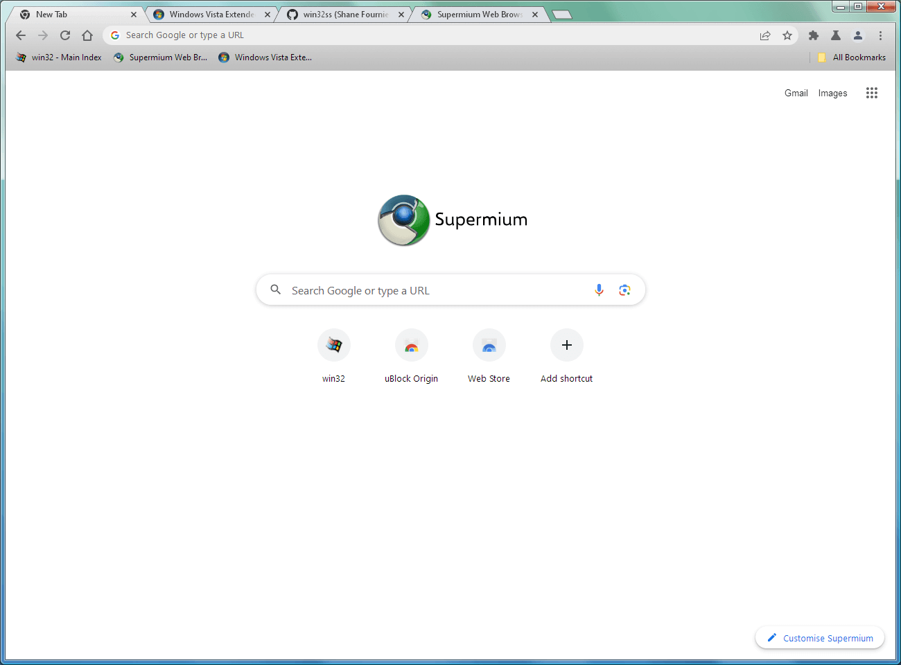
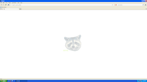
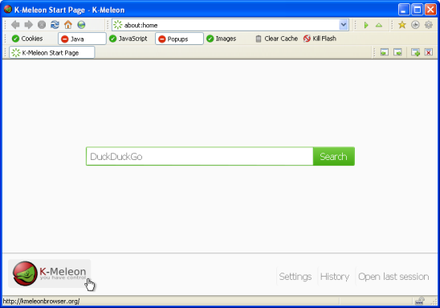
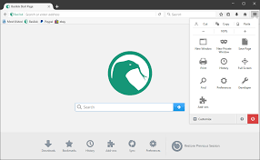
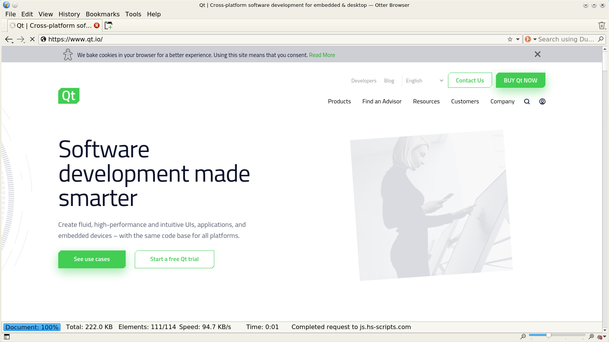

Top 5 Best Lightweight Browsers for Windows XP/Vista/7 x32 2GB RAM
This list will show you the best working web browsers for all Windows XP/Vista/7 for low-end PCs !
Supermium
Supermium is a Chromium fork that supports Windows XP/Vista/7, Supports modern HTML/CSS/JS/WASM and was made to be faster than most alternatives. Actively maintained.
MyPal
MyPal is based on the old Firefox codebase. It's optimized for XP and Windows 7 and supports most older Firefox add-ons, Very light and is ideal for low RAM machines.
K-Meleon
K-Meleon is a very light browser and doesnt support most modern features, Its interface is minimal and its very fast on low-end PCs, Works with Windows XP/Vista/7, Made for basic browsing
Basilisk
Basilisk is a modern web browser that's quite heavier than K-Meleon and the others, But it works better with modern websites
Otter Browser
Otter Browser is looks like Opera 12 UI and is very Lightweight and privacy-friendly,Doesn't support as much features as Basilisk, Still a solid alternative for general use.
